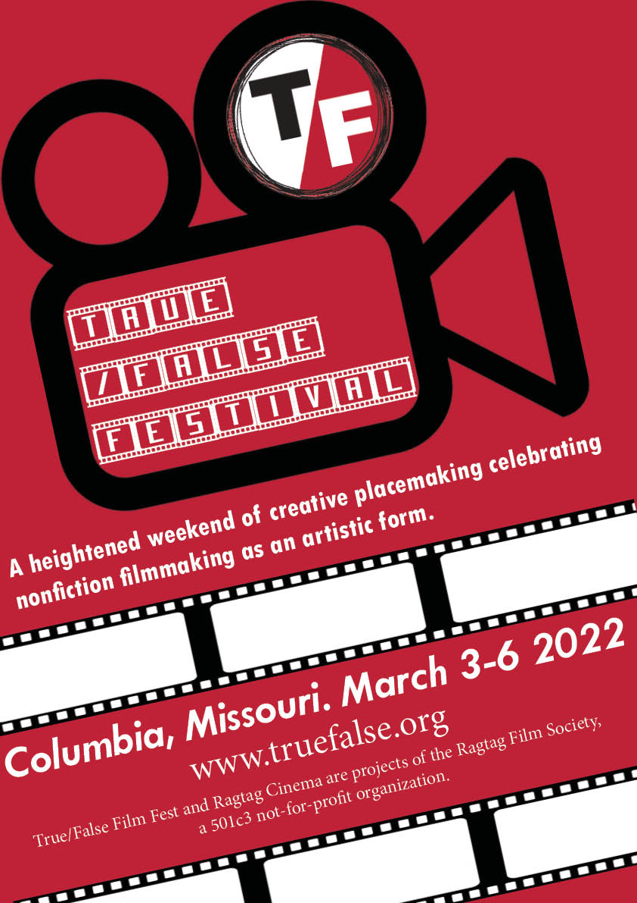
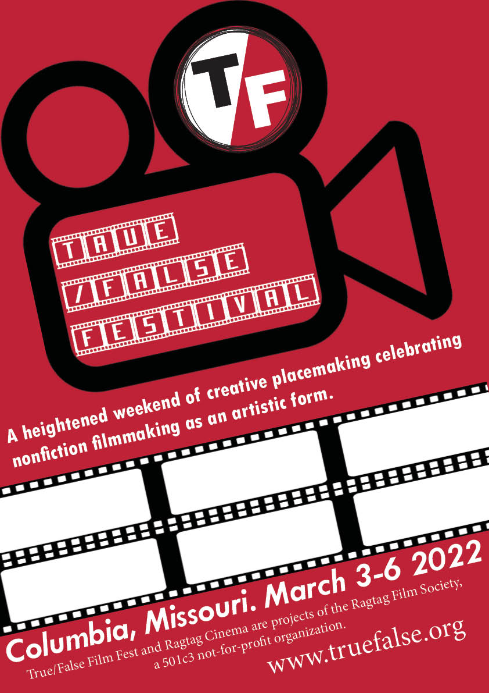
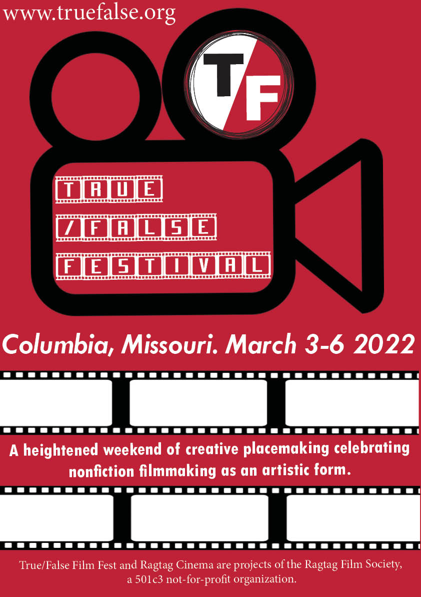
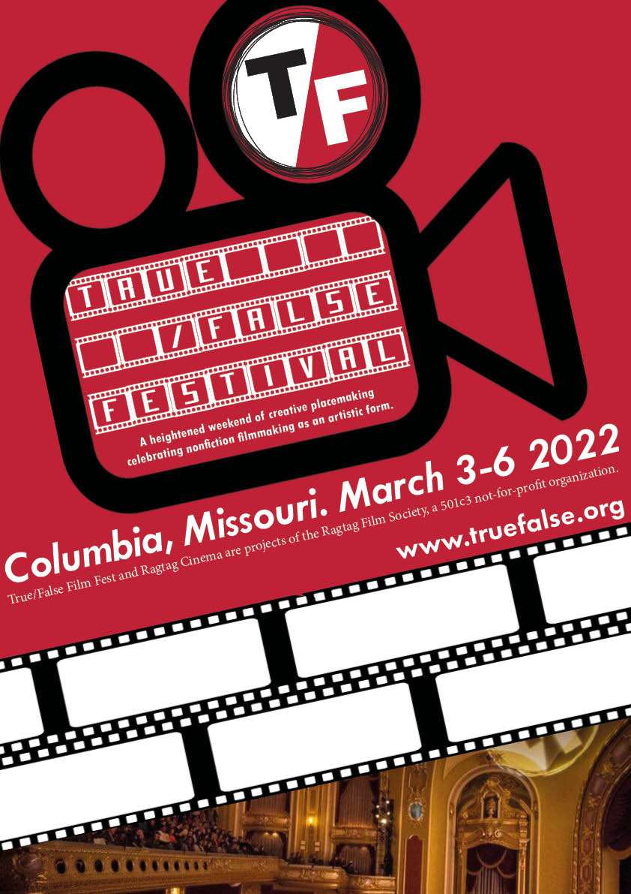
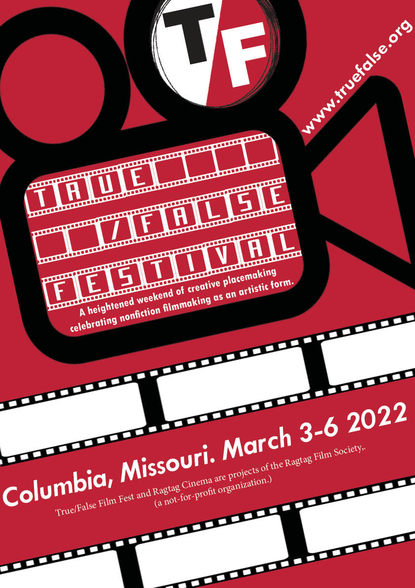

Contrast, Alignment, Repetition and Proximity
C.A.R.P is a set of design principles
The task at hand was to design posters for a film festival called True/ False, whilst thinking about these design principles.
C.A.R.P summarised
Initial designs.
These are the first 3 pieces I designed but there was much more improvement to be done.
  When thinking about contrast, I thought it would be good to include different font styles (blocky, curved etc). Also, I made sure to include some white to balance the dark colours. I successfully implemented the proximity principal in the first two posters by connecting related information together with the layout. In reflection, the placement of text could be improved and there could be more proximity in the upper section of the poster. Alignment was implemented all through the design but with feedback and reflection, I concluded i'd aligned it too much and need to work on this. Moving on, I needed to make sure to implement the repetition principal and work on improving use of the other principals. It was also suggested to add images to the film, so this was experimented with too.
Poster development.
 I played with the layout to remove a bit of the excessive orderliness, I made the logo text come in from different sides and was happy with how this looked. I decided to make the slogan smaller to "marry" it in with the logo, this was to improve the proximity and it seemed fitting to have the slogan go below the logo. The varying fonts also provide contrast. I felt it was necessary to change the website name to the same font as the date and location to implement the repetition principal, this to relate these two pieces to the audience as they are both key information on the page. I played with the placement of the website address to see where it would fit in nicely.I decided to put it on an angle to further mess with the previous orderly look. During this, also implementing ideas of alignment as it placed on the angled line of the film camera vector. I placed an image in the lower part of the and thought this didnt look great. I messed with the sizing of the top contents to see if that would improve the look and bring the content together nicely. I was happy with the result so I decided to keep it.